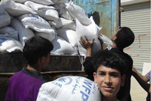
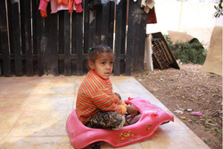
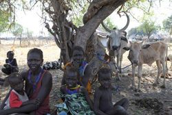

Skip to About the UN
Skip to UN News
Skip to resources
Welcome to the United Nations. It's your world.
UN Search
عربي
中文
English
Français
Русский
Español
United Nations: We the peoples...
A stronger UN for a better world.
Peace and Security
Development
Human Rights
Humanitarian Affairs
International Law
Your United Nations
UN at a Glance
UN Charter
Structure and Organization
Member States
Strengthening the UN
UN Information Centres
Events Calendar
Frequently Asked Questions
Secretary-General
Secretariat
Spokesperson
Main Bodies
General Assembly
President
Security Council
President
Economic & Social Council
President
Trusteeship Council
International Court of Justice
More info >>
The UN and . . .
Civil Society
Business Partnerships
Global Compact
Partnerships
Rule of Law
Sustainability
Global Model UN
CyberSchoolBus
Security Council condemns deadly attack near hospital in Benghazi

UN finds critical shortages of food, other supplies on visit to Syrian village of Houla

Libya: UN mission strongly condemns deadly bombing in Benghazi
Bosnia and Herzegovina lags in progress to regional integration, Security Council told

South Sudan: UN voices deep concern at deteriorating situation in Pibor town
RSS
In the News
14/05/2013 Bosnia and Herzegovina lags in progress to regional integration, Security Council told
14/05/2013 South Sudan: UN voices deep concern at deteriorating situation in Pibor town
14/05/2013 UN human rights chief urges Syrian rebels to end abuses after gruesome video hits Internet
More stories from the
UN News Centre
>
Press Releases
Daily Briefing
UN Journal
Webcast
Multimedia
UN Radio
In Focus
Mali
Situation in the Middle East/Question of Palestine
Syria
Millennium Development Goals
Climate Change
Global Issues
Africa... Environment... Women
Social Media
Resources and Services
Documents
Maps
Employment
Procurement
Stamps
Media Accreditation
Library
Publications
Bookshop
Internships
Databases
Visiting UN Headquarters
Conferences, Meetings, Events
UN General Assembly 67th session
UN Security Council meetings
More Conferences, Meetings and Events>
Recent Additions
International Day of Happiness (20 March)
International Day of Forests (21 March)
More Recent Additions >

Social Media